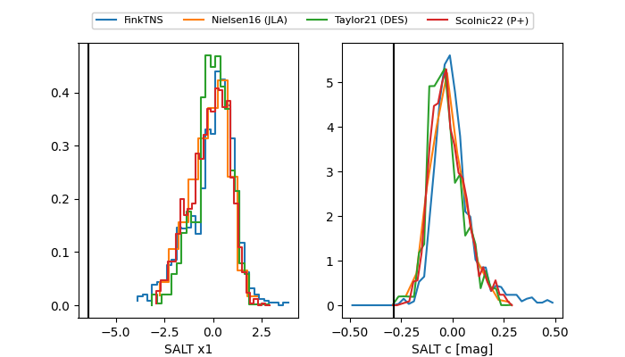

FINK: ZTF25abobsaw
Lasair: ZTF25abobsaw
ALeRCE: ZTF25abobsaw
ZTF25abobsaw (ztf,fink)
equatorial (ra, dec) = (304.9514,+0.94486)
galactic (l, b) = (44.2926,-19.09613)

last ztfg=20.03, ztfr=20.06
2 ztfg, 3 ztfr detections